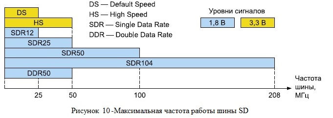
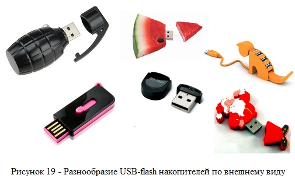
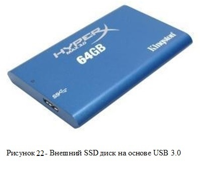

1. SSD технология
1.1 Введение
История возникновения твердотельных накопителей (SSD) начинается с 1978 года, когда компанией StorageTek был разработан первый полупроводниковый накопитель на основе RAM-памяти. Следующим шагов к современности стал 1982 год, ознаменовавшийся появлением полупроводникового накопителя на базе RAM-памяти (скорость считывания данных – 320 МБит/с). Год 1995 стал годом появления прародителя современных SSD накопителей (компания M-Systems презентовала полупроводниковый накопитель на основе flash-памяти). 2008 год ознаменовался выходом в свет твердотельного накопителя современного образца со скоростью записи считывания 240 и 260 Мб\сек соответственно от компании Mtron Storage Technology.
1.2 SSD технология
SSD (solid state drive, накопитель на твёрдотельной памяти, твёрдотельный накопитель – рус.) – накопитель информации, основанный на чипах энергонезависимой памяти, которые сохраняют данные после отключения питания.
Содержит такие же интерфейсы ввода-вывода как и современные жёсткие диски. В SSD не используются движущиеся части и элементы как в электромеханических устройствах (жёсткие диски, дискеты), что исключает вероятность износа механическим путём.
1.3 Типы НТТП (Flash SSD)
- Карты памяти (flash-карты);
- USB-flash накопители (диски);
- SSD HDD;
- SSD HDD – карты расширения.
1.3.1 Карты памяти (flash-карты)
Карта памяти (flash-карта) - компактное электронное запоминающее устройство, используемое для хранения цифровой информации. Современные карты памяти изготавливаются на основе флеш-памяти, хотя принципиально могут использоваться и другие технологии.
1.3.1.1. PC-Card (PCMCIA) или ATA Flash
{kind=link}
PC Card (рисунок 1) (ранее этот тип карт назывался PCMCIA [Personal Computer Memory Card International Association]) является самой старой и самой большой по размеру картой памяти. Она снабжена ATA контроллером. Благодаря этому обеспечивается эмуляция обычного жесткого диска. В настоящее время флэш-память этого типа используется редко. Существует три типа PC Card ATA (I, II и III). Все они отличаются толщиной (3,3 5,0 и 10,5 мм соответственно). Все три типа обратно совместимы между собой (в более толстом разъеме всегда можно использовать более тонкую карту, поскольку толщина разъема у всех типов одинакова – 3,3 мм). Питание карт - 3,3В и 5В. ATA-flash как правило относится к форм фактору PCMCIA Type I. Интерфейс - параллельный.
PC-Card Flash бывают двух типов: PCMCIA Linear Flash Card и ATA Flash Card (Flash Disk). Linear встречается намного реже ATA flash и не совместим с последним. Отличие между ними состоит в том, что ATA Flash содержит в себе схему, позволяющую эмулировать обычный HDD, автоматически помечать испорченные блоки, и производить автоматическое стирание блоков.
1.3.1.2. CompactFlash (CF)
Карта памяти CompactFlash - это съёмный носитель с параллельным интерфейсом. Конструкция карт CompactFlash, также как и ATA Flash, эмулирует жёсткий диск с АТА- интерфейсом. Разъём CompactFlash расположен на торце карты и практически полностью соответствует контактам PCMCIA. Единственным отличием является их число – 68 контактов у PCMCIA, и 50 у CompactFlash.
{kind=link}
В карты CompactFlash встроен контроллер, который берет на себя функции по управлению flash-устройством, что не требует размещения дополнительных микросхем в самом портативном цифровом устройстве и упрощает конструкцию слота.
Карты CompactFlash также поддерживают два рабочих напряжения: 3.3 В и 5 В. Таким образом, для установки CompactFlash в разъем PCMCIA, достаточно использовать простой адаптер - CF-PCMCIA, «увеличивающий» маленькую карту CompactFlash до размеров PCMCIA. Различают 2 типа карт CompactFlash (тип I и тип II), которые отличаются толщиной - CompactFlash II толще карт I –го типа на 2 мм. Другие существенные отличия между этими типами отсутствуют.
Типы I-II карт CompactFlash обратно совместимы, то есть карты II-ого типа можно использовать в устройствах для I-ого (но не наоборот). Причиной появления CompactFlash II явилась необходимость в разработке карт памяти большого объема.
Карты CompactFlash поддерживают 2 режима работы: PCMCIA (стандарта для карт ввода-вывода) и IDE (АТА) - интерфейса (по спецификации для жестких дисков).
С учетом специфики flash-памяти, специально для flash-накопителей в систему команд ATA дополнительно введена группа команд. Особенность заключается в том, что быстрее всего запись выполняется в пустой блок, в то время как перезапись требует еще и предварительной очистки блока. Введенные команды позволяют определять состояние блоков и выполнять операции по оптимальному сценарию, учитывая равномерное использование всего объема памяти.
На рисунке 2 представлена карта памяти Compact Flash с объемом памяти 128 Гб, скоростью обмена данными 800х, скоростью чтения 120 Мб/с.
1.3.1.3. SmartMedia (SSFDC - Solid State Floppy Disk Card)
{kind=link}
SmartMedia имеет параллельный интерфейс, 22-контактный. 8 из 22-х контактов карты используются для передачи данных, остальные используются для питания микросхемы, управления и несут на себе другие вспомогательные функции. Толщина карты всего лишь 0,76мм. Не имеет встроеннного контроллера. Существует две разновидности SmartMedia: 5-и и 3-х вольтовые (внешне отличаются маркировкой и тем, с какой стороны у карты скошен угол: у 5В SmartMedia он скошен слева, а у 3,3В - справа).
На карте имеется специальное углубление (в форме кружочка). Если в это место приклеить соответствующей формы токопроводящий стикер, то карта будет защищена от записи.
По сравнению с другими картами флэш-памяти, в которых используется полупроводниковая память, размещённая на печатной плате вместе с контроллером и другими компонентами, SmartMedia устроена очень просто. Карта собирается без пайки и, кроме микросхемы NAND-памяти, не содержит в себе никакой другой микроэлектроники.
1.3.1.4. xD-Picture Card (eXtreme Digital)
{kind=link}
Карта разработана в качестве замены SmartMedia. xD-Picture Card имеет параллельный интерфейс, 22-контактный. Размеры карты: 20 х 25 х 1,7 мм, а вес 2,8 г. Контакты у XD расположены, так же как и у SmartMedia, на лицевой части карты. Отсутствует контроллер памяти. Стоимость xD-карт в среднем вдвое больше стоимости SD-карт одного и того же объёма.
Карты памяти xD-Picture Card поддерживаются преимущественно моделями цифровых камер Olympus (в новых моделях фотоаппаратов Olympus появилась возможность использовать microSD/microSDHC через переходник типа xD), Fujifilm (мигрирует на карты формата SD, современные модели фотоаппаратов Fuji поддерживают оба типа карт) и других, использующих этот формат.
1.3.1.5. MMC (MultiMedia Card)
Карта MMC имеет последовательный интерфейс, 7-ми контактный. Карты MMC содержат 7 контактов, реально из которых используется 6, а седьмой формально считается зарезервированным на будущее. По стандарту MMC способна работать на частотах до 20МГц. Карточка состоит из пластиковой оболочки и печатной платы, на которой расположена микросхема памяти, микроконтроллер и разведены контакты.
Назначение контактов MMC:
- 1 контакт на передачу данных (в SPI - Data out);
- 1 контакт на передачу команд (в SPI - Data in);
- 1 контакт - часы;
- 3 контакта на питание (2 земли и 1 питание);
- 1 контакт зарезервирован (в SPI режиме - chip select);
Flash-карты MultiMedia могут функционировать в двух основных режимах: SPI (Serial Peripheral Interface) и, собственно, MMC. Стандарт SPI не является протоколом передачи данных, а определяет только структуру, позволяющую применять в составе устройства SPI-микроконтроллеры различных производителей. Это дает возможность использования уже готовых модулей, уменьшая затраты на разработку устройства.
Карты стандарта MMC снабжены защитой от случайного стирания записанной на них информации: на корпусе имеется механический переключатель блокировки записи (как у 3,5-дюймовых флоппи-дискет). В структуру MMC-карты включен контроллер, управляющий работой карты, что упрощает работу с ней и обеспечивает ее совместимость со многими устройствами.
Размеры MMC-карт составляют всего 24мм x 32мм x 1.4мм, вес - около 1.5 граммов.
Для применения в особо малогабаритных устройствах выпущена уменьшенная в размерах (24мм x 18мм x 1.4мм, вес 0,8 г) разновидность карт MMC - RS-MMC (Reduced Size - уменьшенный размер), полностью аналогичная по разъёмам "полноразмерной" MMC (может вставляться в обычный слот MMC с помощью механического переходника-удлиннителя).
Так же есть еще три разновидности семейства карт MMC. Это полноразмерная "скоростная" карта MMC plus, её уменьшенная версия MMC mobile и сверхминиатюрная (размеры всего 12мм x 14мм x 1.1мм) MMC micro. Скоростные карты формата MMC (MMC plus и MMC mobile), в отличие от "стандартных" MMC и RS-MMC, оснащены дополнительным рядом контактов, что позволило обеспечить очень высокую скорость передачи информации без ущерба для совместимости с устройствами, поддерживающими только стандартные карты MMC.
{kind=link}
1.3.1.6. SD (SecureDigital)
Название SecureDigital указывает на поддержку картами памяти технологии защиты данных от несанкционированного доступа и копирования. В отличие от других типов флэш-памяти, все SD-карты оснащаются электронной схемой защиты информации. Карта может хранить как незащищенную, так и защищенную информацию. Фактически карты памяти SD являются дальнейшим развитием стандарта MMC. Флэш-карты SD обратно совместимы с MMC (в устройство с разъемом SD можно вставить MMC, но не наоборот).
SD-карты памяти выпускаются в трех форм-факторах (рисунок 6) полноразмерные карты (full-size SD), miniSD и microSD. Полноразмерные карты нашли применение в цифровых фото- и видеокамерах, электронных книгах и навигаторах; microSD наиболее часто используют в мобильных телефонах и смартфонах, а miniSD является переходным вариантом между двумя предыдущими. На сегодня уже тысячи моделей устройств поддерживают стандарт SD.
{kind=link}
По объему хранимой информации карты подразделяются на:
- Standard Capacity SD Memory Card (SDSC): до 2 Гбайт (включительно);
- High Capacity SD Memory Card (SDHC): от 2 до 32 Гбайт (включительно);
- Extended Capacity SD Memory Card (SDXC): от 32 Гбайт до 2 Тбайт (включительно).
Следует отличать скорость обмена данными по шине и скорость чтения/записи в карту памяти: первая характеризует скорость обмена служебной информацией по SD-шине (в которую входят не только пользовательские данные, но и различная служебная информация), а вторая реальную скорость чтения/записи пользовательских данных во встроенную энергонезависимую Flash-память. Для классификации скорости чтения/записи пользовательских данных стандартом вводится порог, указывающий на минимальную скорость чтения/записи. Также имеются два принципиально разных типа SD-карт памяти стандартных классов (SD Class 2, 4, 6, 10) и высокоскоростные (UHS-I) с различными требованиями по скорости обмена по шине (рисунок 7).
{kind=link}
На рисунке 8 показана совместимость SD-продуктов и размеры памяти SD-карт.
{kind=link}
Стандартные классы SD-карт классифицируются следующим образом (в скобках указаны требования по режиму работы SD-шины):
- SD Class 2: скорость чтения/записи не ниже 2 Мбайт/с (Default Speed bus mode);
- SD Class 4: скорость чтения/записи не ниже 4 Мбайт/с (Default Speed bus mode);
- SD Class 6: скорость чтения/записи не ниже 6 Мбайт/с (Default Speed bus mode);
- SD Class 10: скорость чтения/записи не ниже 10 Мбайт/с (High Speed bus mode) опциональный режим.
Существуют также высокоскоростные SD-карты, требующие более быстрых режимов работы SD-шины (Ultra High Speed bus mode, UHS-I) и пониженного уровня сигналов (1,8 В вместо 3,3 В в стандартных классах). В таких картах скорость обмена по шине может достигать 104 Мбайт/c, а скорость чтения/записи порядка 95 Мбайт/с. Помимо стандартных скоростных режимов работы шины (DS, HS) в SD UHS-I введено еще 5 режимов:
- SDR12 (Single Data Rate): скорость обмена по SD-шине до 12,5 Мбайт/c.
- SDR25 (Single Data Rate): скорость обмена по SD-шине до 25 Мбайт/c.
- SDR50 (Single Data Rate): скорость обмена по SD-шине до 50 Мбайт/c.
- SDR104 (Single Data Rate): скорость обмена по SD-шине до 104 Мбайт/c.
- DDR50 (Double Data Rate): скорость обмена по SD-шине до 50 Мбайт/c опциональный режим (обязателен только для карт памяти microSD UHS-I).
Максимальные скорости обмена по SD-шине и соответствующая им частота работы шины для карт памяти класса UHS-I показаны на рис. 9 и 10 соответственно.
{kind=link}
{kind=link}
Сравнительные характеристики и классификация различных видов карт памяти представлены на рисунке 11.
{kind=link}
Следует отметить тот факт, что в картах памяти SDXC используется проприетарная файловая система exFAT, разработанная и запатентованная корпорацией Microsoft, вследствие чего возникает вопрос о возможности использования таких карт в операционных системах, отличных от семейства Windows.
SD-карты поддерживают три различных режима обмена с хостом: однобитный SPI-режим, скорость обмена по которому не превышает 3,125 Мбайт/с (при максимальной частоте работы шины 25 МГц), однобитный и четырехбитный SD-режимы обмена (тактовый сигнал, вывод команд, 4 вывода данных и 3 вывода цепей питания/«земли»). Назначение выводов карты памяти в режиме SPI и SD (рисунок 13) показано на рисунке 12 .
{kind=link}
{kind=link}
Примечание. IN вход; OUT выход; PWR цепи питания; IN/OUT тристабильная шина.
Типовое устройство SD-карты памяти показано на рисунке 14. В состав карты входит контроллер интерфейса SD, блок специализированных регистров, процессорный блок с контроллером прямого доступа памяти, супервизор питания со стабилизатором напряжения питания и устройством формирования сброса схемы, контроллер интерфейса Flash-памяти с блоком коррекции ошибок и микросхемы энергонезависимой Flash-памяти.
{kind=link}
В задачи контроллера интерфейса SD входит декодирование команд, поступающих от хоста, генерирование определенных видов ответов на эти команды (набор команд и ответов стандартизирован) и задачи приема и передачи данных. Целостность данных и команд контролируется алгоритмом подсчета и проверки контрольной суммы пакета.
Стандарт на SD-карты также требует наличия служебных регистров, доступ к которым осуществляется по специальным командам, декодируемым в контроллере интерфейса SD. Список служебных регистров и их краткое описание показаны на рисунке 15.
{kind=link}
Блоки энергонезависимой Flash-памяти осуществляют обмен данными с контроллером SD-карты через контроллер интерфейса Flash-памяти, в котором также имеется блок коррекции ошибок, возникающих в процессе чтения и записи данных во Flash-память. На сегодня в качестве основного кода коррекции ошибок используется код БЧХ, исправляющая способность которого в наиболее продвинутых устройствах достигает 60 битовых ошибок на 512 байт пользовательской информации.
В карте также имеется супервизор питания со встроенными стабилизаторами напряжения питания 3,3 и 1,8 В и схемой формирования сигнала начального сброса блоков контроллера SD.
Настройку и организацию обмена данными между блоками осуществляет процессорный блок. Также в его задачи входит реализация программного алгоритма контроля равномерного использования блоков Flash-памяти (в процессе записи информации) для повышения износостойкости карты.
Для увеличения скорости чтения/записи информации используют канал прямого доступа к памяти из интерфейса Flash-памяти напрямую в интерфейс SD, минуя процессорную шину.
На рисунке 16 представлено описание обозначений на SD-карте памяти.
{kind=link}
1.3.1.7. Memory Stick (MS)
Memory Stick (MS) — носитель информации на основе технологии флеш-памяти от корпорации Sony.
Карта памяти имеет последовательный 10-контактный интерфейс. На питание у MemoryStick отведено 4 из 10 контактов, еще 2 контакта зарезервированы, один контакт используется для передачи данных и команд, один для синхронизации, один для сигнализации состояния шины (может находится в 4-х состояниях), а один для определения того, вставлена карта, или нет, для защиты от записи или случайного стирания используется механический переключатель как на SD картах. Карта работает в полудуплексном режиме. Максимальная частота, на которой может работать карта - 20МГц. Размеры карты 21,5мм x 50мм x 2,8мм и вес 4 г.
Существуют несколько разновидностей карт памяти Memory Stick: Memory Stick, Memory Stick Select (50мм × 21,5мм × 2,8мм), Memory Stick Duo (31мм × 20мм × 1,6мм), Memory Stick Micro (M2) (15мм ×12,5мм ×1,2мм), Memory Stick PRO (50мм ×21,5мм ×2,8мм), Memory Stick PRO Duo (31мм ×20мм ×1,6мм), Memory Stick PRO Duo Mark 2 (31мм ×20мм ×1,6мм), Memory Stick PRO-HG (31мм ×20мм ×1,6мм), Memory Stick PRO-HG Duo (31мм ×20мм ×1,6мм). Все они различаются форм-фактором (размерами), однако, существуют специальные переходники для подключения модулей одного вида в слот другого вида.
На рисунке 17 представлены разновидности карт памяти Memory Stick.
{kind=link}
1.3.2 USB-flash накопители (диски)
USB-flash накопитель - запоминающее устройство, использующее в качестве носителя флеш-память, и подключаемое к компьютеру или иному считывающему устройству по интерфейсу USB. Различают по типу используемой flash-памяти (SLC и MLC, рассматриваются в разделе 2) и по типу интерфейса: USB 1.0, USB 2.0 и USB 3.0.
На рисунке 18 представлена конструкция USB-flash накопителя.
{kind=link}
Преимущества:
- Небольшой размер, вес, портативность;
- Накопитель можно подключить к любому устройству считывания (практически везде есть USB);
- Практически нет влияния от внешней окружающей среды (пыль, царапины, загрязненность);
- USB флешка может работать в широком диапазоне температур;
- Малые габариты позволяют хранить большой объем информации;
- Низкое энергопотребления;
- В сравнении с жестким дискам, она устойчивее к внешним воздействиям, вибрациям и ударам;
- Удобство подключения к устройству;
- Высокая скорость доступа к данным.
Недостатки:
- Ограниченное число циклов записи и стирания перед выходом из строя;
- Ограниченный срок автономного хранения данных;
- Скорость записи и чтения ограничены пропускной способностью шины USB и самой flash-памяти;
- Чувствительны к радиации и электростатическому разряду (обычно наблюдается в быту, чаще всего зимой).
На рисунке 19 представлено разнообразие USB-flash накопителей по внешнему виду.
{kind=link}
1.3.3 SSD HDD
SSD HDD - компьютерное немеханическое запоминающее устройство на основе микросхем памяти.
Твёрдотельный накопитель состоит из самих чипов NAND, управляющего контроллёра, привносящего все функции, чипа энергозависимой кеш - памяти, преобразователя напряжения и печатной платы на которой всё это распаяно (рисунок 20).
{kind=link}
Иногда в SSD - накопителях используется небольшая батарея, чтобы при отключении питания, все данные из кэша можно было бы переписать в энергонезависимую память и сохранить все данные в целостности.
1.3.3.1. Применение SSD накопителей
Повсеместное применение SSD накопителей в современных условиях происходит по нескольким причинам. Во-первых, цены на современные SSD стали гораздо ниже, по сравнению с первыми серийными SSD. Во-вторых, твердотельные накопители выпускаются во всех форм-факторах, присущих жестким дискам. В третьих, любой HDD можно заменить на SSD – необходимо только, чтобы совпадал интерфейс подключения накопителя. И, кстати, для пользователя, при замене HDD на SSD, абсолютно ничего не меняется, то есть такие манипуляции как форматирование, деление на разделы, установку и переустановку операционной системы можно проводить точно также, как обычно это делалось с использованием жесткого диска.

В настольных компьютерах и некоторых ноутбуках SSD применяют в качестве накопителя для операционной системы и критичных к скорости работы накопителя приложений, а дополнительный жесткий диск большого объема используют в качестве хранилища. Такая схема позволяет создать недорогую, но быструю дисковую подсистему.
В некоторых ноутбуках применяется такая же схема, однако все чаще можно встретить модели ноутбуков, где используется только SSD накопитель. Кстати владельцы ноутбуков и нетбуков могут легко поменять HDD ноутбука на любой 2.5″ SSD для увеличения общей скорости работы ноутбука.
Поскольку самым распространенным для SSD является форм-фактор 2.5″, а соответствующие отсеки в системных блоках чаще всего отсутствуют, многие производители включают в комплект поставки своих SSD переходник 2.5″ → 3.5″. Для тех 2.5″ SSD, которые не имеют переходника в комплекте, всегда можно приобрести адаптер 2.5″ → 3.5″ стороннего производителя.
Отличным показателем скорости работы современных SSD можно считать 450 – 550 Мб/с на чтение и запись, что уже почти соответствует верхнему порогу пропускной способности интерфейса SATA 6 Gb/s. Такую скорость сегодня способны обеспечить достаточно большое количество современных твердотельных накопителей, при этом цена этого класса накопителей стремительно снижается. Именно в этом сегменте находятся накопители, являющиеся идеальными или близкими к идеальному решениями с точки зрения соотношения цена / производительность.
{kind=link}
SSD с более низкими скоростными показателями, а значит с устаревшими контроллерами и интерфейсом SATA II, все еще популярны благодаря сравнительно невысокой цене. При этом они все еще быстрее любого HDD для настольных ПК.
В серверостроении традиционно применялись дорогостоящие SSD накопители на основе SLC чипов памяти, ввиду их большей надежности и долговечности, являющихся важными факторами для серверов. Сегодня MLC чипы памяти ни в чем не уступают SLC чипам, поэтому даже серверные SSD сегодня производятся с применением данного типа чипов памяти. В целях экономии, а также благодаря таким технологиям, как MaxIQ (Adaptec) и Cash Cade (LSI), реализованных в RAID контроллерах некоторых производителей, SSD можно использовать в качестве кэш памяти массива из сравнительно дешевых и емких HDD. Также контроллеры компании Adaptec предлагают возможность создания специфического RAID массива, под названием HybridRAID, позволяя тем самым создавать массив уровня RAID1 или RAID10 из одного или нескольких SSD и соответствующего количества HDD. При этом скорость чтения при работе с таким массивом будет равна скорости чтения SSD, а скорость записи – скорости записи жесткого диска.
1.3.3.2. Гибридные диски SSHD
Гибридный жесткий диск – это вид накопителя, который совмещает в себе традиционный жесткий диск и SSD небольшого объема, который используется в качестве кэш-памяти второго уровня. Работа гибридных накопителей заключается в анализе часто используемых данных, размещенных на HDD и перенос их в память встроенного SSD для повышения скорости чтения при последующих обращениях пользователя к ним.
Гибридные винчестеры - компромиссное решение, позволяющее как увеличить общую производительность системы, в которой они установлены, так и снизить цену такой системы.
Главным достоинством гибридного жесткого диска является увеличение общей производительности системы, в которой они установлены, с использованием всего одного дискового отсека (а не двух, если использовать и SSD, и обычного жесткого диска).
Принцип работы SSHD основывается на кэшировании наиболее часто используемых данных с использованием флеш-памяти, то есть SSD-части «гибрида». Уже при первом запуске операционной системы на ноутбуке/ПК с «гибридом» в энергонезависимую часть памяти SSHD помещаются файлы, которые нужны операционной системе для загрузки. В результате скорость запуска ОС увеличивается, и весьма значительно.
Гибридный диск, показывает практически аналогичные результаты скорости передачи файлов по сравнению с обычными жесткими дисками. Но разница в работе разных типов устройств становится очень заметной, если сравнивать время доступа к файлам (Access Time).
К примеру, если взять диск Seagate ST500LT032 емкостью 500 ГБ и сравнить с «гибридом» ST500LM000 аналогичной емкости, то скорость доступа к файлам будет 24,2 и 0,3 мс. Что касается предельность скорости интерфейса, то разница уже не в разы, а в 15%. В первом случае 101 МБ/с, во втором — 115 МБ/с.
Недостатки тоже есть, и в первую очередь, это — невозможность уместить все критичные данные на SSD-части SSHD диска. Обычно SSD в «гибриде» устанавливается объемом в 8 ГБ, иногда — больше (например, нередки модели с 32 ГБ флеш-памяти), но тогда такой диск будет уже дороже. По цене «гибриды» лишь немного превышают цену обычных жестких дисков.
Если взять уже упоминавшиеся выше модели, то цена Seagate Laptop Thin SSHD ST500LM000 составляет 73-75 долларов, а Seagate ST500LT032 — около 50 долларов США.
1.3.4 SSD HDD – карты расширения
Существуют также SSD, выполненные в форм-факторе PC Card, подключаемые к компьютеру по интерфейсу PCIe. Такие устройства фактически являются набором из RAID контроллера и нескольких SSD, объединенных в массив, с той лишь разницей, что все это уместилось на PCB самого контроллера. По понятным причинам, такие SSD являются самыми быстрыми среди всех твердотельных накопителей. Отдельно следует сказать о серии SSD OCZ IBIS, представляющих собой 3.5″ накопители с интерфейсом HSDL – нестандартным интерфейсом разработанным компанией OCZ. Для подключения к компьютеру используется входящий в комплект поставки адаптер HSDLаPCIe.
{kind=link}
1.4 Интерфейсы для подключения SSD
Самыми распространёнными интерфейсами для SSD потребительского класса являются SATA 6 Гбит/c, PCI-Express и USB 3.0. Все эти интерфейсы способны обеспечить нужную пропускную способность для любого SSD накопителя.
В портативных устройствах вроде ноутбуков и планшетных компьютеров, наиболее часто встречаются компактные SSDнакопители с интерфейсом mini PCI-Express (mSATA).
1.5 Преимущества и недостатки по сравнению с жёсткими дисками (HDD)
Преимущества:
- отсутствие подвижных частей;
- скорости чтения и записи зачастую вплотную приближаются к пропускной способности интерфейса (SATA II 3 Gb/s, SATA III 6 Gb/s и т.д.) и возможностям применяемых контроллеров;
- низкая потребляемая мощность;
- полное отсутствие шума от движущихся частей и охлаждающих вентиляторов;
- высокая механическая стойкость;
- широкий диапазон рабочих температур;
- стабильность времени считывания файлов вне зависимости от их расположения или фрагментации;
- малые габариты и вес;
- большой потенциал для совершенствования характеристик накопителей и технологий их производства.
Недостатки:
- главный недостаток SSD – ограниченное количество циклов перезаписи: обычная (MLC, Multi-level cell, многоуровневые ячейки памяти) флеш-память позволяет записывать данные примерно 10 000 раз, более дорогостоящие виды памяти (SLC, Single-level cell, одноуровневые ячейки памяти) – более 100 000 раз (Для борьбы с неравномерным износом применяются схемы балансирования нагрузки. Контроллер хранит информацию о том, сколько раз какие блоки перезаписывались и при необходимости «меняет их местами»);
- подпроблема совместимости SSD накопителей с устаревшими и даже многими актуальными версиями ОС семейства Microsoft Windows, которые не учитывают специфику SSD накопителей и дополнительно изнашивают их. Использование операционными системами механизма свопинга (подкачки) на SSD также, с большой вероятностью, уменьшает срок эксплуатации накопителя;
- цена SSD накопителей существенно выше в пересчёте на единицу объёма. К тому же, стоимость SSD прямо пропорциональна их ёмкости, в то время как стоимость традиционных жёстких дисков зависит от количества пластин и медленнее растёт при увеличении объёма накопителя.